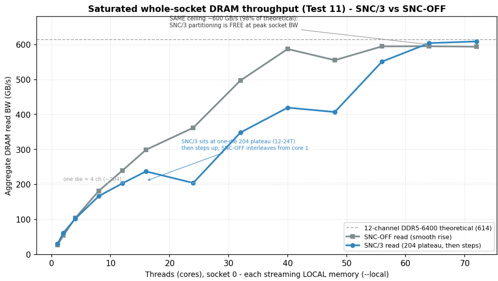

Distilled Slack Takeaway
- Test 11 scales DRAM read throughput as socket-0 cores increase from 1 to 72.
- In SNC/3, a worker that stays inside one NUMA node mainly sees the four DDR5 channels attached to that die.
- In SNC-OFF, the same socket is one NUMA node, so the test can scale across all twelve socket DDR5 channels.
- Below about four cores, SNC/3 can look better because local latency is lower.
- Beyond that, the one-die bandwidth ceiling arrives quickly: roughly 204 GB/s for one SNC node.
- SNC-OFF keeps scaling smoothly because its socket-local node can use the whole socket memory system.
Numbers To Remember
35.9 ns
SNC/3 local L3 latency, down from 60.5 ns in the same-machine SNC-OFF prior.
204 GB/s
One SNC3 node's DRAM read ceiling, approximately one die with four DDR5 channels.
609 GB/s
SNC/3 whole-socket read bandwidth when memory is placed local per die across the socket.
Mental Model
SNC3: socket 0 = node0 + node1 + node2 each node ~= one compute die + four DDR5 channels great for local latency dangerous if a wide workload binds memory to one node SNC-OFF: socket 0 = one NUMA node one socket-local placement can use all twelve DDR5 channels less local-latency precision simpler scaling for bandwidth-hungry workers
TRON Implication
SNC/3 should be treated as a placement project, not a BIOS-only switch. Compact Llama steady decode might benefit if workers, driver threads, DMA/KV/descriptor memory, queues, and device locality are kept inside the same SNC node. A naive port can regress when CPUs and memory land on different SNC nodes.
Wider phases such as Qwen prefill, model load, quantization, or any many-worker memory-heavy phase need sharding across SNC nodes. Otherwise the workload can collapse onto the 204 GB/s one-node ceiling even though the full socket can still deliver around 600 GB/s when work is spread correctly.